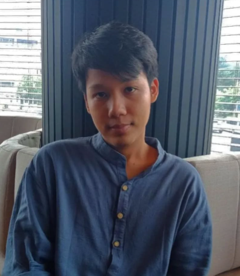

About me
My name is Htet Myet Nyein. You have probably noticed it since it is the name of the website. I was born in Yangon, Myanmar. I am 21 years old and currently living in NayPyiTaw, the capital of Myanmar. Both my prarents were government workers until my father retired 7 years ago. Due to them being government workers, I had to move along with them to several cities across Myanmar. In 2021, when Myanmar was in complete chaos, I was in Loikaw, Kayah. I lived there for two years, surrounded by heavy artileries and constant bombing. I even had to evacuate the city in 2023. But this makes me realize how fragile life can be and encouraged me to chase my dreams regardless of the situation.
In 2025, I am in NayPyiTaw, after moving to three different cities, from Loikaw to Mandalay, from Mandalay to Yangon and from Yangon to NayPyiTaw. In March 28, I was once again showned how lives can be taken within minutes. A devastating earthquake destroyed my house. I was inside the house and saw how violent nature can be at times. But my determination to chase my dreams became more solid.